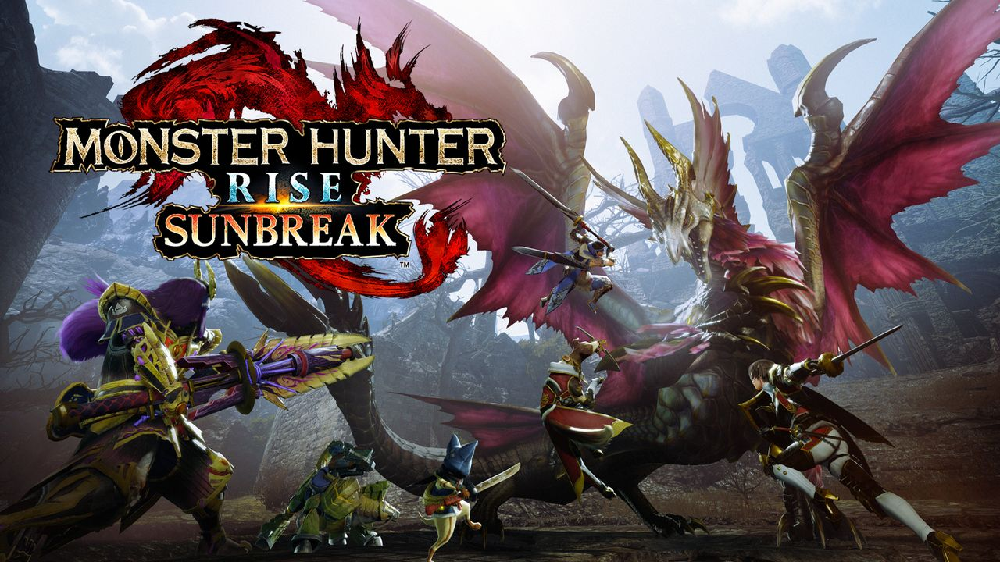
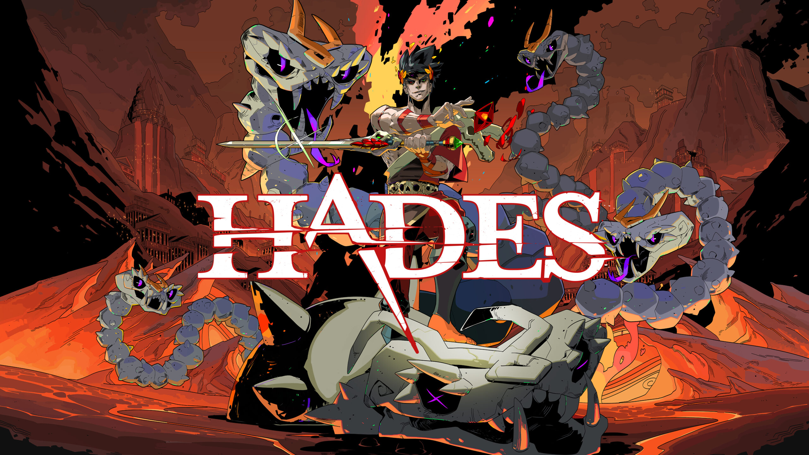

Monster Hunter Rise
I have been a long time fan of the Monster Hunter series. I have been playing since Monster Hunter 4 which came out in 2015. The majority of each new installment really improved on the previous titles, except Monster Hunter World. While I really like Monster Hunter World (I put 300+ hours into this game), the combat felt way more weak and each weapon felt like it was missing something. Most of the other games had a gimmick like sub-species, hunter arts, hunting styles or event monsters. What Monster Hunter World did very well is that they streamlined many of the annoying and convoluted game systems which took out a lot of the frustration that other games have caused me.
What makes me really like Monster Hunter Rise is that it massively improved upon the movement, the companion customization and weapon versatility. The movement was greatly improved because they introduced a ninja-like mechanic in the game called wire-bugs where you can use these bugs to preform high jumps, scaling high walls, dodge attacks or even use wire-bug skills in combat. This feature added so much to the game because it increased the verticality of every fight. In every other game, if you wanted to jump or scale a wall, you would have to find a cliff to jump off of (no fall damage lol) or find a specific spot to climb up. But now, you can even use wire-bugs to dodge or defend attacks making the really slow weapons viable with fighting more monsters.
As for the companion customization, MH Rise added the palamute (dog) companion. Before there were just palicos (cats) that could assist you in battle, gathering, healing you and even setting up traps. Palamutes are unable to do most of these roles as effectively as palicos, but you can ride them, increasing your movement speed. If you're like me, an impatient gamer, you would really like this addition to the game. This is great when I am trying to run away from the monster because I am about to die, because monsters can always run faster than me lol.
The weapon versatility in this game is so good. Because of wire-bug techniques, each weapon now has a dodge/parry alongside a buff. Before, if I was playing a slow moving weapon, I would have to sit there and hope I could time a guard point with split second accuracy or die. Also wire-bugs add more special moves to do which makes every weapon have enough attacks that you're not always doing the same moves.
As for my complaints, MH Rise does not include some of my favorite gimmicks and has not given much of a reason to hunt apex monsters. Some of my favorite gimmicks are sub-species and apex monsters. An example of a sub-species of a monster named Zamtrios thats a 4-legged shark in the tundra that can create ice armor and swim in ice and water is Tigerstripe Zamtrios found in the desert that swims in sand. They included a very limited amount of sub-species. As for apex monsters, they are also limited in number and theres no real use to the materials you get from hunting them. In previous titles, you would hunt apex monsters to get the last few upgrades of the armor set or weapons or even special charms.
Pros
- Very good movement
- Weapon Versatility
- Verticality
- Companion customization
Cons
- Lack of variety of sub-species and apex monsters
- Complicated movement controls
Hades
Roguelike and roguelite are a few of my favorite genres of video games. The gameplay loop that they have is so satisfying to me. It mainly consists of two parts upgrading your character and weapons and testing out your new power in a dungeon crawler. It is similar to sharpening a knife. After sharpening a kitchen knife, I always want to see how cleanly it slices through vegetables. In roguelite games, you sharpen your skills and weapons and then test out how well you do in the game. Its always a good experience because if I lose to an enemy that consistently beats me, I can go upgrade myself and come back stronger and try again with a new sense of confidence.
Hades is a rougelite that does this gameplay loop so well. On Steam, I have 100% of the achievements and over 150+ hours played. Some of the aspects of the game I really like are the lore/mythology, the weapon customization, luck-based skills and character depth.
The lore and mythology of this game is a large reason for why I like it so much. I have always been interested in mythology and in this game, you play as a character that casually interacts with figures like Zeus, Hades, Poseidon and Cerberus. You can even pet Cerberus, only the left head likes being pet tho.